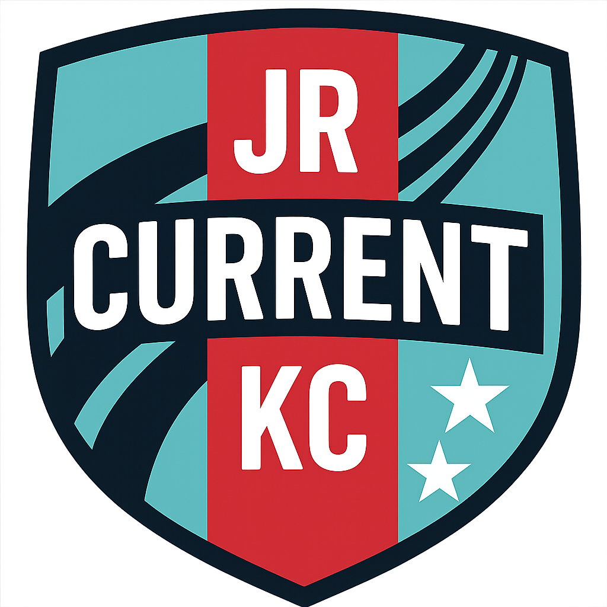

When my daughter Madison's Junior Current soccer team needed a website, I saw a perfect opportunity for a fun father-daughter coding project. Madison has been playing with this team since pre-K, so we had years of team knowledge to draw from.
With the help of Kiro, AWS's agentic IDE, what could have been a lengthy development process became an enjoyable weekend activity.
The Vision: A Professional Team Site
The Junior Current needed a digital home for schedules, match reports, and team achievements. We wanted something that looked professional while being manageable to build and maintain.
Spec-Driven Development Made Simple
I introduced Madison to planning before coding by writing simple specs for each feature:
- "Parents need to see game schedules"
- "Match reports should tell the story of each game"
- "Stats should be easy to track and display"
This taught her that good software starts with clear thinking about what users actually need.
Design: Channeling KC Current
Since we're Kansas City locals, we borrowed the KC Current's navy blue, teal, and red color scheme. We created our team logo using ChatGPT, iterating through prompts until we had something the girls were proud of. All images went into organized folders, teaching Madison about project structure.

The Stats Revolution
The real breakthrough was our statistics system:
Stats Page: Visual displays of player and team performance that 4th graders can understand and get excited about.
Stat Tracker: A real-time game logging tool that parents use on tablets during matches to capture goals, assists, saves, and key moments.
AI-Powered Match Reports: We export stat tracker data and feed it to ChatGPT, which transforms dry statistics into engaging narratives. Parents love these detailed stories about their daughter's contributions and growth.
Technology Stack
We kept it simple but modern:
- HTML5, CSS3, and vanilla JavaScript
- GitHub Pages for hosting
- Kiro IDE for enhanced development
- ChatGPT integration for content generation
Kiro was particularly helpful in accelerating our development process, allowing us to focus on the fun parts of building rather than getting bogged down in setup and configuration.
The Impact
The website became more than we expected—a source of pride for the girls and a valuable resource for parents. The AI-generated match reports have become treasured keepsakes that families share on social media.
Most importantly, Madison now sees herself as someone who can build things with technology. She's already sketching ideas for new features and asking how different apps work.
Lessons Learned
This project taught Madison problem-solving, user empathy, and basic programming concepts. For me, it reinforced that the best technology projects bring people together and tell meaningful stories.
Looking Forward
As Madison's skills grow, we're planning player profile pages, photo galleries, and maybe even a mobile app. The beautiful game and beautiful code both teach the same lessons: teamwork, perseverance, and creating something greater than the sum of its parts.
Check out our work at jrkccurrent.com - a digital home for an amazing group of young athletes and proof that coding can be a fun family activity.